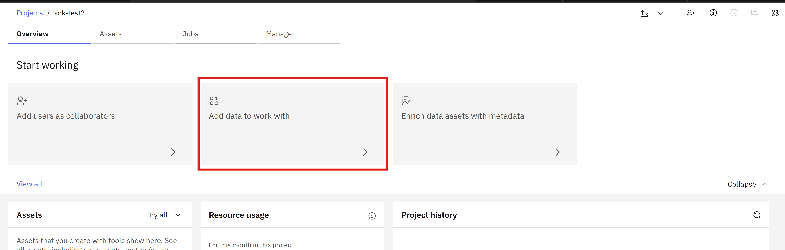
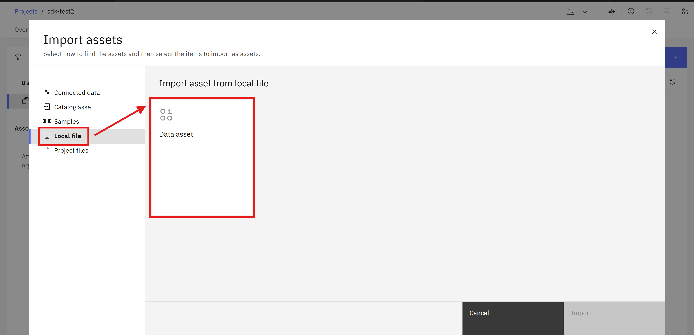
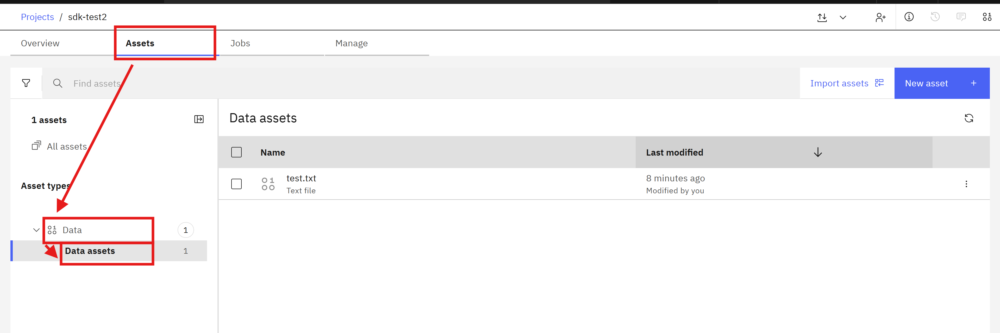
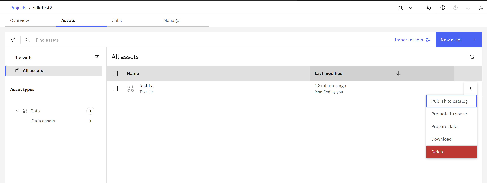

Files#
A file is a data asset and it is just a regular file where you can store your data.
ConnectionFile is a wrapper containing a few more details about a file such as hash or url.
To download a file with real data you must make an additional method call.
The SDK provides functionality to interact with files.
- This includes operations such as:
Uploading a file
Retrieving file(s)
Downloading a file
Deleting a file
Uploading a File#
In the UI, you can upload a new File by navigating to Overview -> Add data to work with.
 {kind=link}
{kind=link}
In the SDK to upload a new ConnectionFile,
use the Platform.upload_file() method.
You must provide a name for the new file and a file path where the file is located on your machine.
Platform.upload_file() method returns a ConnectionFile object.
>>> file = platform.upload_file(
... name='dummy.txt',
... file=pathlib.Path('/home/me/file.txt'),
... )
ConnectionFile(file_name='dummy.txt')
Retrieving an existing File#
In the UI, you can get Files by navigating to Assets -> Data -> Data assets.
{kind=link}
In the SDK, Files can be retrieved using Platform.files property.
This property returns a ConnectionFiles object.
>>> # Return a list of all files
>>> files = platform.files
[ConnectionFile(file_name='dummy.txt')]
Note
Currently Platform.files does not support any filter arguments.
Tip
For detailed information about parameters and values refer to https://cloud.ibm.com/apidocs/data-ai-common-core#listfiles.
Deleting a File#
In the UI, you can delete a File by navigating to Assets -> Data -> Data assets.
{kind=link}
In the SDK pass a ConnectionFile instance to Platform.delete_file() method to delete it.
This method returns an HTTP response indicating the status of the delete operation.
>>> file = platform.files.get(file_name='data.txt')
ConnectionFile(file_name='data.txt')
>>> res = platform.delete_file(file)
<Response [204]>